Predicting MCI to Alzheimer's with the data Thai clinics really have
In short
- The question: if we cut out expensive tests like PET scan, CSF and the APOE gene, can we still predict which MCI patients will develop Alzheimer’s within 24 months (up to 30 with visit tolerance)?
- What “develop Alzheimer’s” means here: an ADNI diagnosis of dementia within 30 months of the first MCI visit (a 24-month target plus 6 months of tolerance), not Alzheimer’s pathology confirmed by biomarkers. Non-converters followed for less than 18 months were left out, so the 25.5% who converted is not a general MCI conversion rate
- For hospitals with MRI: a 4-variable set (age, years of education, MoCA, and hippocampal volume paired with ICV) reaches AUROC 0.815
- For clinics without MRI: a paper points table using MoCA, MMSE, sex and years of schooling reaches AUROC about 0.769
- Doctors who want to try this points table: the step-by-step guide, the full table and its limits are in the “For doctors” section below
- All of this is research on ADNI data, not yet validated in Thai patients. Do not use it to make diagnosis or treatment decisions
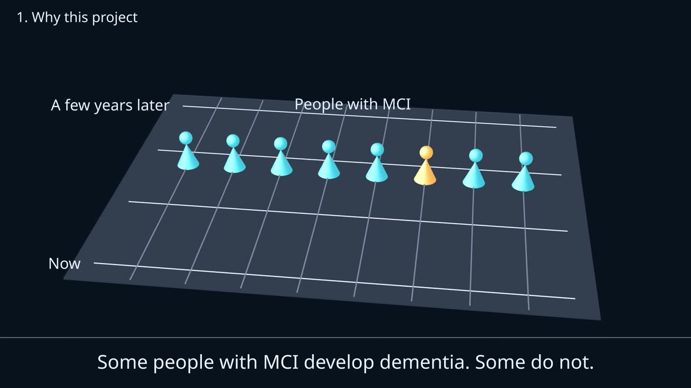
Background: Alzheimer’s and the limits of Thai clinics

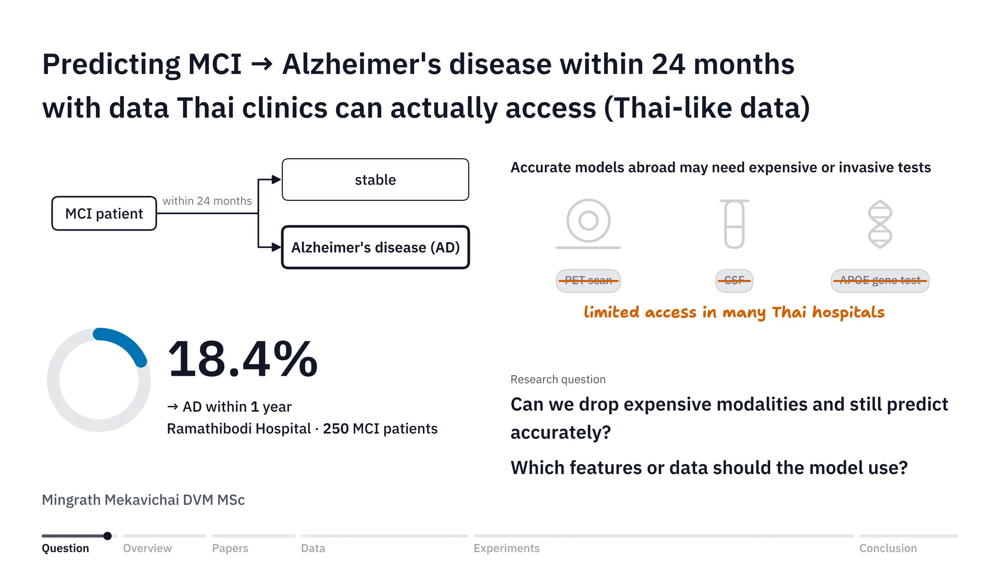
In Thailand, access to the modalities for diagnosing disease may not exist in every hospital, and there may be quite a lot of people who don’t even have the money, or the means, to access those modalities. One of the systems that needs a lot of modalities for diagnosis is the nervous system, and one of the conditions we see a great deal in neurological disease is Alzheimer’s.
There’s one thing about Alzheimer’s that I find quite interesting: the progression from mild cognitive impairment, or MCI, to Alzheimer’s disease, or AD. A study from Ramathibodi Hospital[1] found that out of about 250 patients, as many as 18.4% progressed from MCI to AD (the study counted conversion to dementia, not to Alzheimer’s specifically) within 1 year — that’s about one in five. If we can tell who will progress from MCI to AD, doctors can plan treatment better, right?
But to make a model predict this progression accurately, most studies abroad have to use expensive modalities or invasive diagnosis, whether that’s a PET scan, CSF, or testing for the APOE gene, and many hospitals in Thailand still have limited access to these modalities.
So it would be really great, wouldn’t it, if we could cut out the expensive modalities or the invasive diagnosis and still predict progression from MCI to AD just as accurately. The question is: can we? And if we can, what features would we need? Or put simply, what data do we need for the model’s prediction? And that is where the project I did in Brain Code Camp 2026 came from.
Overview: from data to a set of tools

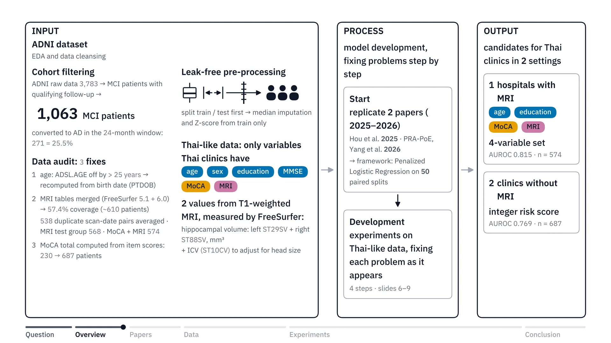
First, let’s look at the overview of the project. It starts with choosing a dataset, right? Okay, which dataset are we going to use for this project? And since Thailand doesn’t have many public datasets, or doesn’t have a public dataset we could use to train a model to look at progression from MCI to Alzheimer’s, right, we used the ADNI dataset[6] instead. ADNI is data on Alzheimer’s patients in North America. Once we had the data, we did EDA and cleansed it — screening patients, fixing ages and so on, which I’ll go into later — and we merged the tabular MRI data and recalculated the MoCA score. All of this was getting the dataset ready to train the model, and it came out as 1,063 MCI patients in total.
Then we did the pre-processing while preventing data leakage, meaning we don’t let bias in, by keeping the train and test sets clearly separate. And we scoped it to only what Thailand has, so I labelled it Thai-like data: age, sex, years of education, MMSE and the MoCA score, plus T1W MRI, which gives two values: hippocampal volume and ICV. The T1W values I used are computed with a program called FreeSurfer, which measures the volumes and puts them into a table as numbers. The values we use are hippocampal volume and ICV, which is intracranial volume.
Let me expand a little on how a scan turns into a number. A T1 MRI image is three-dimensional, like a whole loaf of bread cut into thin slices. Each slice is made of tiny cubes about 1 millimetre across, called voxels. FreeSurfer automatically colours in which voxel belongs to which part of the brain, then counts the voxels that are hippocampus, on both the left and the right side, and gives a volume in cubic millimetres. ADNI has already done this step, so we just take the resulting table and use it.

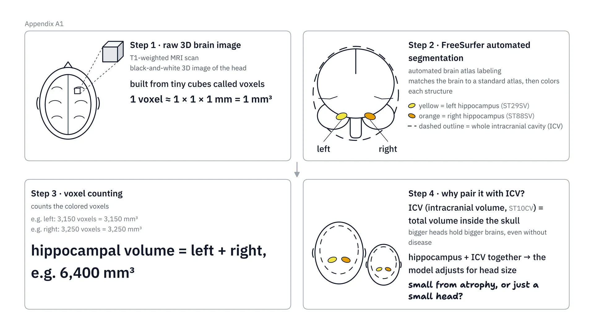
Going through the illustration step by step, it starts with step 1: a T1 MRI image is a three-dimensional image made of tiny cubes about 1 millimetre across, called voxels. Then in step 2, FreeSurfer automatically colours in which voxels are the left hippocampus and the right hippocampus, and outlines the skull cavity, which is called ICV. Once the colouring is done, in step 3 we count the voxels of both hippocampi together, giving a volume in cubic millimetres. And in step 4, the reason we always have to pair it with ICV is that people with bigger heads already have bigger brains. ICV helps the model tell whether a small hippocampus is small because it has really atrophied, or because the head is small. ADNI has already produced these numbers; where a Thai hospital would get these values is the first limitation I talked about in the limitations section below.
Then, for model development, we looked for papers that did something similar to us, meaning cutting out modalities, especially ones focused on the ADNI dataset. We found two papers: Hou et al.[2] from 2025 and PRA-PoE[3] from 2026. In the end we chose penalized logistic regression, using 50 paired splits — I’ll tell you the details in the next section — and then developed the experiments on Thai-like data.
And finally, the Output: we get a set of options, or candidates, for two settings, with MRI and without MRI, which I’ll talk about further below.
What we learned from the 2 source papers

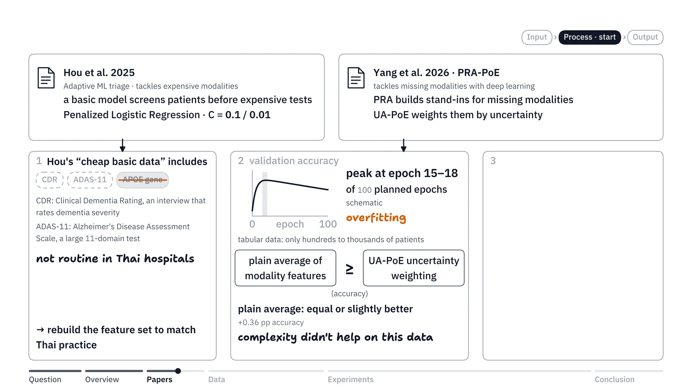
Before we look at data cleansing, let me briefly tell you why we trained the model this way. At first, the goal of our project was to try cutting out the expensive modalities, right? So we looked for papers close to ours, and found Hou’s 2025 paper on adaptive triage: using a basic model to screen patients before sending them on to the expensive tests. There was also another paper, by Yang, on PRA-PoE, which tries using a deep learning model to help predict patients who haven’t had every modality tested.
So I tried replicating both papers on the ADNI dataset I actually had, following their methods. The very first thing I found was that the word cheap, or cheap basic data, in their paper doesn’t mean the same as really cheap in our country. They included CDR, the Clinical Dementia Rating, which we don’t do here, and ADAS-11, which we don’t do either, and the APOE gene was also included in their cheap set. But in Thai hospitals, we don’t routinely test these things. So if we’re going to group the data into features, we should group them to match the reality in Thailand too.
The second thing: when we started replicating Yang’s paper on our dataset, we saw that the deep learning model we built was overfitting at about epoch 15–18. The accuracy on the validation set peaked around those epochs, and training further didn’t make it any better, because our data only ran to hundreds or a few thousand (looking back, that peak also coincides with the end of the learning-rate warm-up at epoch 15, so it is indirect evidence for choosing a simpler model: it proves neither that the model was overfitting nor that the small sample caused it). That is exactly the overfitting problem. So I decided, okay, deep learning may not suit us very well, and I cut the deep learning part and didn’t take it further, because it didn’t help much on this dataset.

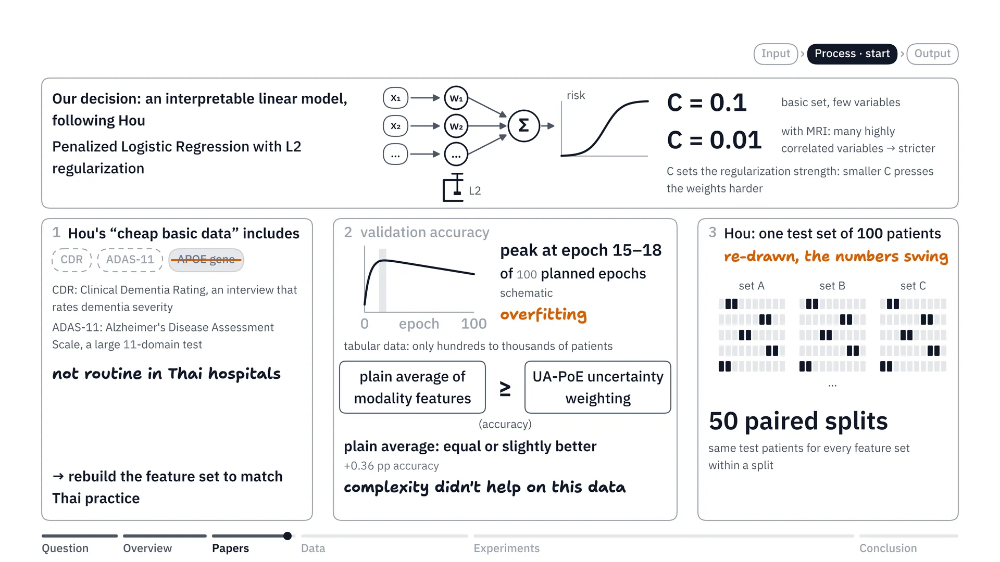
In the end we decided, okay, let’s build an interpretable linear model instead. Put simply, we use a linear model and we can open it up and look at the weights inside, to see which features matter more or less — what the weights look like. That’s basically Hou’s recipe. We made penalized logistic regression our main model. Penalized logistic regression is like doing logistic regression but adding L2 regularization, to help stop the model from piling too much weight onto any one value, because we don’t want it to overfit. As for C, we set it at 0.1 for the basic information, because that set has only a few variables, and we gave C = 0.01 to things like the MRI data, because brain data has many variables that are highly correlated, and we didn’t want the model to overfit on them too much.
And finally, the third thing: Hou’s paper evaluated on a single test set of 100 patients, and when we re-drew it, the numbers swung a lot. So we did the evaluation with 50 paired splits: randomly splitting the data into train and test 50 times, so that the numbers don’t depend on the luck of a single draw.
Preparing the data: screening patients, fixing bugs and preventing data leakage

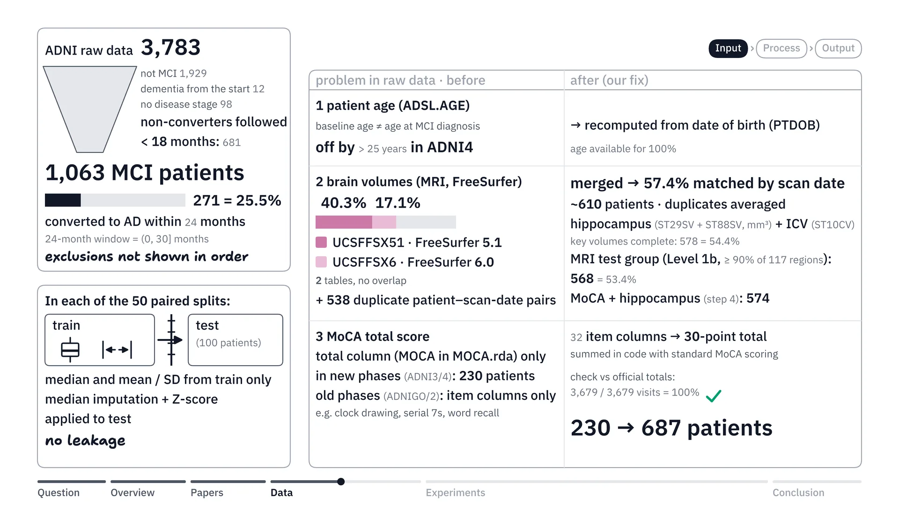
Once the experimental framework was settled, we did EDA and data cleaning on the ADNI data we downloaded, which has 3 parts.
The first part, we did cohort filtering. The data has 3,700-odd people, right? We removed people who weren’t MCI, and people who didn’t convert to AD but were followed for less than 18 months, so that people who dropped out midway don’t get mixed in. In the end we’re left with 1,063 MCI patients to include, and in this group a total of 271 converted to AD, or 25.5%, which matches the statistics.
The second part, we did a data audit, and we found 3 problems. The first was age. Because the ADNI dataset records age at first enrolment (strictly, the age in that table is the baseline age of the current ADNI phase), not when the person started developing MCI, some people had values that were quite far off, so we recalculated it.
The second was the tabular MRI table. This is where they ran the MRI images through FreeSurfer and turned them into tables in the ADNI dataset, and there are 2 versions. The first is FreeSurfer 5.1, and it turned out its data was only 40.3% complete, while FreeSurfer version 6.0 was at 17.1%. So we merged these two tables and matched up the scans, which brought completeness to 57.4%, or put simply about 610 people (57.4% is the share whose scan dates could be matched; 578 people had complete volumes). We also averaged 538 pairs of duplicate scans from the same day, then picked the people with complete brain data, which gave us an MRI test group of 568 people, and a group with both MoCA and hippocampus of 574 people.
Lastly, the MoCA score. In ADNI’s tables, patients tested in the newer phases have a column with the total out of 30 already added up, but that’s only 230 patients. For patients in the older phases, the total column hadn’t been added up for them. So we went exploring in the ADNI database and found that they kept the results item by item, all 30 columns (strictly, 32 scored item columns that add up to a 30-point total) — say, can you draw the clock, or subtracting 7 at a time, things like that. So we recalculated: we wrote a formula and first computed it for the newer-phase patients who already had a total, and found, oh, okay, it’s correct. Once the formula was right, we used it to convert the older-phase patients too, which gave 687 patients in total, all recalculated and revalidated.
And the last part is preventing data leakage. Data leakage is when data from the test set secretly leaks in while we train the model, which makes the results look better than they really are — like students seeing the exam before they sit it. So we prevented it like this: in every one of the 50 splits, once we split train and test, the numbers used to prepare the data — whether the median used to fill in missing values, or the mean and SD used for Z-score scaling — are computed from the people in the train set only, and then the same numbers are applied to the test set. So the test set is like new patients the model has truly never seen.
Choosing features that match Thai clinics

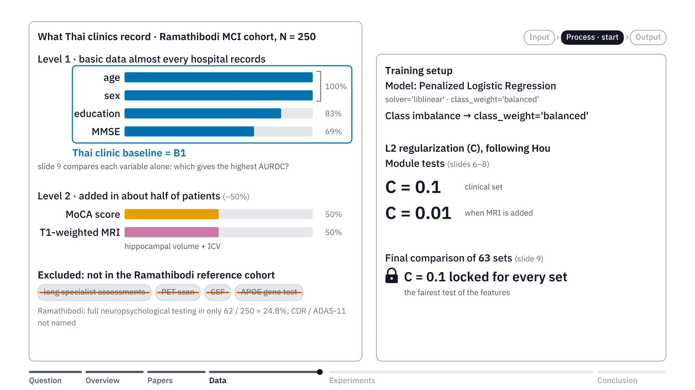
Now that the data was cleaned and settled, right, the next step was choosing features to match the setting of Thai hospitals, to use for training the model.
We drew on the Rama Hospital study of 250 MCI patients I mentioned earlier, which led us to split Thai features into 2 tiers. The first tier is truly basic data that almost every hospital already collects: age, sex, education and the MMSE score. Actually, in step 4 we’ll see which one gives the model the highest AUC.
AUC, or in full AUROC — think of it as a pair-guessing game. Take a pair of patients: one will progress to AD, the other won’t. Then have the model point to who is at higher risk. AUROC is how often the model points correctly, across all the pairs. 0.5 is the same as tossing a coin; 1 means it points correctly on every pair. The closer to 1, the better.
But for now we put these in first, and we named this basic clinical data set B1, to keep things simple. The second tier is what Thai hospitals can additionally test in about half of patients: the MoCA score and MRI, focusing first on T1-weighted MRI. As for the assessments that take a long time, and also PET scans, CSF taps or gene tests like APOE — which aren’t in the Rama Hospital reference cohort — we chose not to use them to train the model.
As for how we trained the model, as I said, we used penalized logistic regression with class weight set to balanced, to deal with the imbalanced classes, and we used L2 regularization following the recipe of Hou’s 2025 paper: C = 0.1 for the clinical data and C = 0.01 for the MRI group of data, in the stage where we tested the modules separately. In the final stage, where we compared 63 patterns — I said we’d compare every one — we locked C at 0.1 for every set, to measure the effect of the features as fairly as possible.
Step 1: is basic data enough, and how much does MRI help?

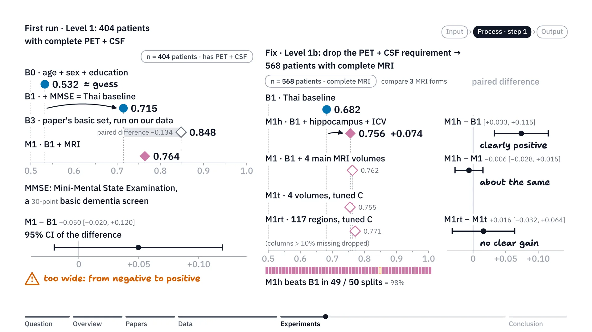
Now let’s look at the results of the first experiment. When we first ran the model, we used B1 data from n 404 people. These 404 were selected because they had complete data like PET scan and CSF. And we found that if we used only age, sex and education, we’d get AUROC of only about 0.53, which is about a coin toss. But when we added MMSE, which is a test, the AUROC jumped up to 0.715. That’s still lower than the paper’s basic set run on our data, which got about 0.848 — quite a big difference, as you can see.
Another problem we hit in the first run: when we put in the MRI values, which we hoped would help move AUROC up, it did move up to 0.764, but the confidence interval had a range that was too wide. The range of the difference swung from negative all the way to positive, which made us feel the conclusion still wasn’t clear — whether adding MRI really makes the model more accurate.
So I looked again and ran it another round, but this time — in the end we’re probably not interested in PET scan and CSF anyway, right? Because in Thailand they’re not widespread diagnostics; they’re not modalities among the features we’d put in anyway. So I wanted to increase n. In the second round we removed the PET scan and CSF condition, which got n up to 568 people.
Then we compared how much MRI data is enough, trying 3 ways. The first way, we used only hippocampus volume, which is the memory part of the brain, paired with ICV, or intracranial volume, which is there to adjust so that people with small heads and big heads can be compared. The second way, we used 4 MRI volumes, adding the entorhinal cortex — the part of the brain next to the hippocampus and one of the first places Alzheimer’s starts to destroy — and the ventricles, the fluid spaces in the brain, which get bigger as brain tissue atrophies. And the third way, we pulled in all 117 regions across the whole brain, and tuned C as well. C is the strength of the penalty on the model’s weights that I told you about earlier (strictly, it is the inverse: the smaller the C, the stronger the penalty); tuning means that instead of locking the value, we let the model try many values in the train set and pick the best one itself. Then we looked at which way worked best.
The result was very clear: in the group of 568, adding just hippocampus and ICV pulls AUROC from 0.682 up to 0.756, or put simply an increase of a full 0.074, winning 49 of 50 rounds. And it gave results very close to using the 4 main regions, while putting in all 117 brain regions did not clearly add accuracy over the 4-main-region model with tuned C. So we concluded: then just hippocampus paired with ICV is enough.
Step 2: trying to send only the people who need it for MRI

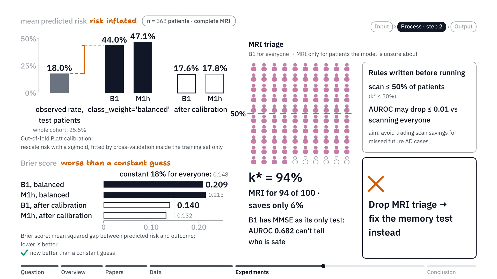
Now, from the first step’s results, we can see that adding MRI features helps AUC a great deal. So we wanted to try mixing in the idea from the paper that did triage: we test everyone with the basic B1 set first, and then send for an MRI scan only the cases the model isn’t very confident about.
But when we ran it, it turned out that in the subgroup with complete tests, the real disease rate was about 18%, but when we gave the classes balance, the side effect was that the model’s average predicted risk went up to 44–47%. Now, the Brier score, which measures the error between the risk the model predicts and the real outcome — when the model over-predicts at 40-something percent, the Brier score comes out quite bad, even worse than guessing that everyone has the same 18% risk.
So we tried fixing it with out-of-fold Platt calibration on the train set. Platt calibration takes the skewed risk and puts it through an equation that rescales it to match the real proportion of disease. And out-of-fold means we split the data inside the train set and take turns doing the calibration, without mixing in the test set at all, to pull the risk scale back. The result is that the average risk the model predicts comes back to about 17.6–17.8%, which is much closer to the real disease rate of 18% than at first, and the Brier score dropped from 0.209 to just 0.140.
But in the end, there was still a point that stopped us going further with this plan. Even though we tried to calibrate the risk until it was okay, when we tried picking people to send for MRI, we set the rules before the run: we must send no more than 50% for scans, and we won’t allow AUROC to drop by more than 0.01, or in other words, it may point wrongly on no more than 1 extra pair in 100 pairs. Because we don’t want anyone to get a missed diagnosis, right?
When we ran it, we found we still had to send 94% of patients for scans, or put simply it saved only 6%. The reason is that the basic B1 model using MMSE doesn’t have much starting accuracy: its AUROC is only 0.682. Put simply, MMSE on its own can’t separate the patients cleanly. When the basic model can’t call who is really safe, it doesn’t dare drop anyone, so it has to send as many as 94% for MRI scans. So I thought, okay, this kind of MRI triage might not work very well, and instead I went to fix the problem at MMSE, this memory test.
Step 3: swapping MMSE for MoCA, and a points table on paper

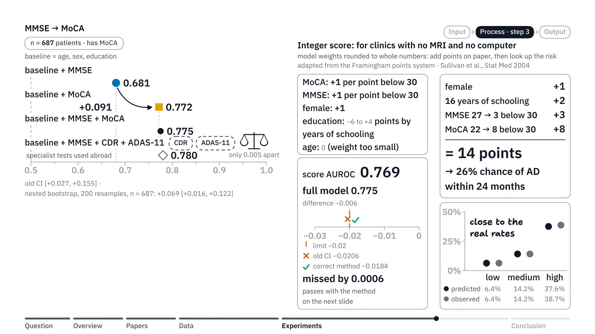
From step 2, we can see that MMSE is like a bottleneck in the model’s prediction, right? So in this step we focused on: what if we try using the MoCA score instead, in our n of 687 people?
The MoCA score measures executive function in more detail than MMSE. When we used the MoCA score as a feature in the model instead, the result was quite clear: just switching from MMSE to the MoCA score raises AUC, or AUROC, from 0.681 to 0.772. Put simply, it goes up by a full 0.091. And using MMSE together with MoCA gives about 0.775, which is close to the assessment sets used abroad, like CDR plus ADAS-11, whose AUROC is about 0.78. That means for Thai clinics without MRI, just switching to the MoCA score closes almost all of this prediction gap (more precisely, MMSE + MoCA reached 0.775 against 0.780 for CDR + ADAS-11, a difference of +0.005 [−0.036, +0.046]: no clear difference was detected, which is not proof that the two are equal).
Then I thought further: but up-country clinics don’t have MRI, and they might not be able to sit and run our model, right? So how could a doctor in an up-country clinic use this model? So we tried taking the hard decimal weights in the model’s equation, rounding them to integers, and making a points table. I call this the integer score. It’s the same way of thinking as the Framingham points system that Sullivan and colleagues published in 2004[4], so that doctors can calculate it on paper. For example, say the MoCA score or MMSE is however many points below 30: you add 1 for each point, or if it’s a woman you add 1, something like that.
Let’s just do an example. Say it’s a woman: 1 point. She studied for 16 years in total, which means she finished a bachelor’s degree: 2 points. She scored 27 on MMSE, 3 short: 3 points. MoCA score 22, 8 short: 8 points. Add them up and you get 14, and the doctor can take the number 14 and look it up in our table right away: this patient has a 26% chance of Alzheimer’s within 2 years (up to 30 months including visit tolerance).
When we checked the accuracy of this number table, meaning the accuracy of the integer score, it turned out the AUROC was as high as 0.769 — only a tiny drop from the model’s 0.775. And when we split the patients by points into 3 groups — low, medium and high risk — the risk percentages our table predicted matched the percentages of patients who actually got sick in all 3 groups (close rather than exact: 37.6% vs 38.7% in the high group). There was just one small catch: when we checked the statistical criterion with the old CI formula, it missed by a hair, just 0.0006, before we switched to the correct statistical method in the next step, and then this points table passed the criterion.
Step 4: trying all 63 combinations, fixing the statistics, and choosing the best-value set

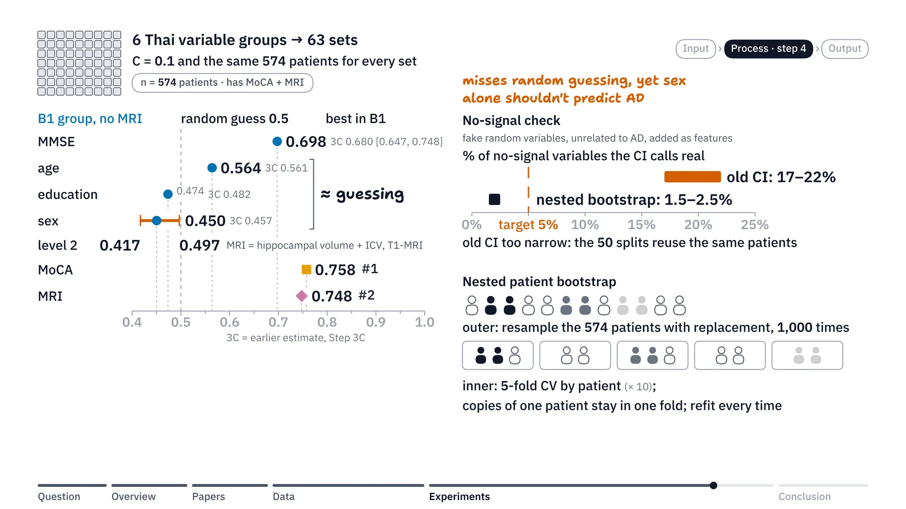
Now we come to step four: we took all 6 groups of variables and arranged them into 63 patterns. I fixed C at 0.1, the same for every set, and ran the comparison on the same group of 574 patients.
As I said when choosing the features: say we could put in only one single feature, which one would give the model the highest AUC? Looking at the results in the figure, it’s quite clear. In the basic group, B1, the group without MRI, if we put in only age, AUC is just 0.564, which is very low, basically no different from guessing. Or sex alone is only 0.450. These basic data on their own are just random guessing. The one that still makes the B1 group best is the MMSE score alone, which keeps this group’s highest AUC at 0.698. But if we also count the second-tier variables like the MoCA score and MRI, number one is the MoCA score alone, with AUC at 0.758, and number two is hippocampal volume extracted from T1 MRI images, at 0.748.
There’s one interesting point here: with the single variables, we notice an anomaly. In the model with only the sex variable, we see that the old 95% confidence interval runs from about 0.417 to 0.497, right? It doesn’t cover 0.5, which it normally should, because 0.5 is a coin toss. So the 95% interval for sex should cover 0.5 too, because sex shouldn’t be able to predict the disease, right?
So I suspected the old formula must have some problem, and I added one more test: a no-signal check. Put simply, I randomly created a fake variable of random numbers, numbers with no relationship at all to Alzheimer’s, and tried using them as a feature in the model. By the rules of statistics, this should pass by fluke — put simply, give a false positive — only about 5% of the time. But it turned out that with the old confidence interval formula, it says these random variables actually work as much as about 17–22% of the time. The reason is that the patients are the same group of patients, swapped back and forth and overlapping, so the old formula computes an error range that’s narrower than reality.
So we tried a new kind of resampling: a nested patient bootstrap. To picture how it works, we do it in two nested layers. In the outer layer, we randomly draw the list of 574 patients with replacement, or sampling with replacement, afresh from the start, 1,000 rounds in total (in the final runs, 200 rounds for the main scans of the variable sets and the score recheck, and 1,000 for the boundary checks, each round with 10 × 5-fold cross-validation inside; the later mentions of 1,000 here, the 1,000 new groups and the thousand rounds, refer to the boundary checks). In each round, some patients are drawn more than once and some aren’t drawn at all — as if we simulated going out and collecting 1,000 new groups of patients.
Inside, once we have each round’s list of patients, we split it with 5-fold cross-validation — that is, into 5 piles — separating train and test again inside that round. The rule is that if a patient is drawn several times, every record of that patient must always go into the same pile, so the same patient can’t leak back and forth between train and test. Then we train a new model and evaluate it separately in every one of the thousand rounds. This method cut the false positives from about 20% down to just 1.5–2.5%, which is within an acceptable range by the rules of statistics.

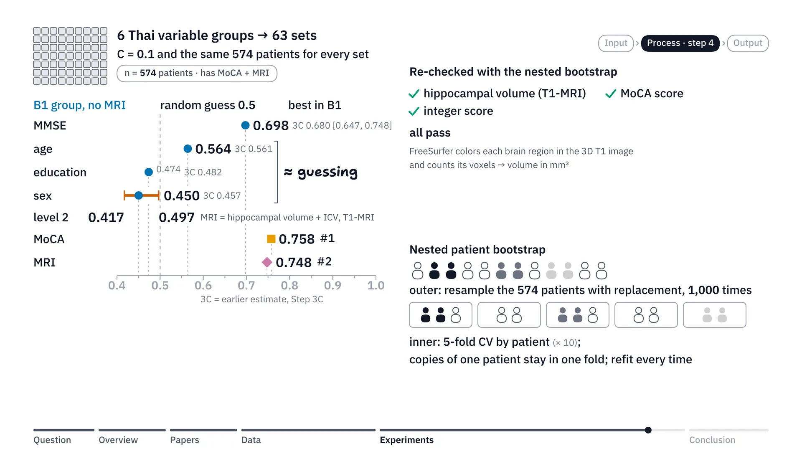
Now when we took the statistical method we thought should be right and re-ran everything, we found that hippocampal volume from T1-weighted images and the MoCA score values still pass the criterion as before, and the integer score that missed the criterion by 0.0006 in step 3 does pass when checked with the new method.
![Choosing the smallest set that passes the non-inferiority check against the best 5-variable set (0.819), a confidence-interval lower bound above −0.02: age, MoCA and MRI fails; adding MMSE or education passes the unadjusted check, but not after Bonferroni adjustment. A cognitive reserve sketch says the same MoCA score with more schooling means higher risk, a pattern seen in the integer score and one possible explanation. The chosen set, age, education, MoCA and MRI, has AUROC 0.815, +0.121 over B1 (0.694).](media/s09-c8.webp)
Finally, choosing the best-value combination of variables for Thai hospitals. Instead of cramming in every variable and making doctors run lots of tests, we set a rule: if we want to cut the variables down to as few as possible, we’ll allow AUC to drop from the set with everything in (strictly, the best 5-variable set, 0.819; all 6 variables gave 0.817) by no more than 0.02, or put simply, it may point wrongly on no more than 2 extra pairs in 100 pairs. Checking through, if we use only 3 variables — age, MoCA and MRI — the accuracy still drops a little more than 0.02 (more precisely, the mean drop was only 0.0060; it is the lower bound of the 95% confidence interval, −0.0226, that crosses −0.02). But when we move up to 4 variables, we find 2 sets that pass: adding MMSE, or adding years of education.
Years of education has a very interesting point. If you look at years of education on its own, it can barely predict the disease at all. But when it’s used together with the MoCA score in the model, it turns out that if two patients score the same on MoCA, the one with more education has a higher risk of Alzheimer’s than the other (this was seen in the integer score, with both MMSE and MoCA held equal). The likely medical reason is cognitive reserve[5] (one possible explanation, which this work did not test), the brain’s reserve capital: people who studied a lot have brains that can prop up or mask illness better than people who studied little. So when a highly educated person’s test score falls to the same level as someone with little education, it means the brain tissue inside has likely deteriorated a lot, to the point that their original capital can’t hold up any more, and so they have a higher chance of declining into Alzheimer’s within two years (up to 30 months including visit tolerance).
So we chose this 4-variable set — age, years of education, MoCA score and brain volume from MRI, which is hippocampal volume with intracranial volume — as the main model for hospitals with an MRI machine. Because this set gives AUC of 0.815, shooting up from the original basic B1 set, which got only 0.694, an increase of a whole 0.121. And in practice, the doctor can just ask the patient for their years of education while taking the history, without wasting time making the patient take an MMSE test that may overlap with the MoCA score.
Summary: what we got for Thai clinics

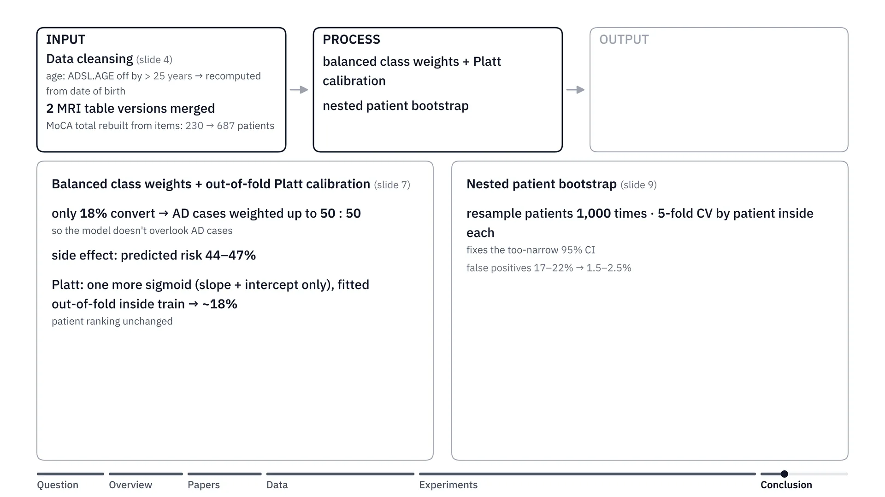
Let’s look at the overview of our project once more. Okay, we used the ADNI dataset, and we did various cleansing: fixing the ages that were off, merging the separate tabular MRI data together, and the MoCA score that was missing, we recalculated it.
Step two is the process of developing the model. At this stage we hit a problem with balanced class weight. Because in our data the share of patients who changed from MCI to Alzheimer’s was 18% (in the test sets of the 568-patient MRI group; in the whole cohort it is 25.5%), when we trained the model we used balanced class weight, telling the model to multiply up the importance of the Alzheimer’s group until it balances at 50 to 50, so the model doesn’t overlook the people who are sick. But the side effect is that when the model sees the sick as half, the risk percentages it predicts shoot above reality, to 44–47%. So we corrected it with Platt calibration. Put simply, Platt calibration is like a scale that reads too heavy every time. We don’t need a new scale, we just set the needle straight. Whoever is heavier than whom still lines up the same, but the numbers come back to the truth. So the average risk came back to 18%, and we set the needle from the train data only, without peeking at the test side.
Step three, covered above, was testing MoCA in place of MMSE and building the paper integer score. And step four is that we switched to the nested patient bootstrap. Put simply, it’s like going back in time to collect a new set of patients 1,000 times (in the final runs, 200 times for the main scans and 1,000 for the boundary checks). And each time, we put the model through an exam with 5-fold cross-validation: splitting the patients into 5 piles, letting the model learn from 4 piles and then sit the exam on the remaining pile, rotating through every pile, with the same patient always in the same pile, so no one sees their own exam in advance. Doing it this way, the confidence interval isn’t narrower than reality like with the old formula. And all of this gave us a set of options for Thai clinics in two settings.

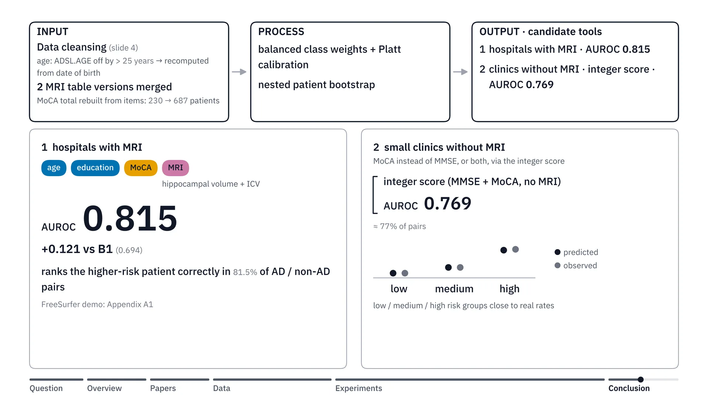
The first setting is hospitals with MRI. The right set is the data group with 4 variables, which is what I chose: age, years of education, MoCA score, and hippocampal volume paired with ICV, as I said earlier. This data set gets AUROC of 0.815, up from the basic B1 set by a full 0.121.
And the second approach is for small clinics without an MRI machine: we can switch to the MoCA score instead of MMSE and use it together with the integer score, which we can calculate right on paper (the integer score itself uses both MoCA and MMSE, plus sex and years of schooling). This puts AUC at about 0.769, an option that’s easy to use and gives risks close to the real data.
For doctors: what the integer score is and how to use it
This section is written for doctors who really want to try this points table, especially up-country clinics with no MRI, or no computer to run a model. You can read it in two minutes.
What is the integer score?
The integer score is a points table on paper. It needs no computer and no MRI. We took the decimal weights in the model’s equation and rounded them to whole numbers, adapting the Framingham points system that Sullivan and colleagues published[4]. You just add up the patient’s points, then look the total up in the table, and you get the risk of the outcome the table was built to predict. The outcome: an ADNI clinical diagnosis of dementia within 30 months of the first MCI visit (a 24-month target plus 6 months of tolerance), not Alzheimer’s confirmed by biomarkers. Below, “this outcome” means exactly this.
What data do you need?
- MoCA score
- MMSE score
- Sex
- Years of schooling
All of these come from a routine visit. You need both MoCA and MMSE. Age is not needed, because age got 0 points in every one of the 50 splits.
Enter the MoCA total before the extra education point (the +1 that the MoCA form adds for few years of schooling): the model was built on totals out of 30 without that point, and the table already scores schooling on its own.
How to use it, step by step
![The integer score card. Left, the points: MoCA and MMSE +1 for each point below 30, female +1, male 0, age 0, and education bands from −6 for 0 to 3 years to +4 for the top band, shown as 20 to 23 years, which in the data is 20 years, the most ADNI records, so values above 20 are outside the data; a made-up example woman with 16 years, MMSE 27 and MoCA 22 gets 1 + 2 + 3 + 8 = 14 points. Right, the risk for totals 2 to 27, from 2% to 90%, with 14 points at 26%; the card itself says "risk of AD within 24 months", but this is the risk of the study outcome, an ADNI dementia diagnosis up to month 30 (a 24-month target plus 6 months of visit tolerance).](media/a21.webp)
This is the full integer score table. Step one, add the points: for MoCA and MMSE, however many points short of 30, add that many. Women add 1. Education adds or subtracts according to the band of years studied, and age gets no points. Step two, take the total and look it up in the table on the right. Like the example below, which gets 14 points: that’s a 26% risk within 24 months (up to 30 months including visit tolerance). This method is adapted from the Framingham points system, but I have to stress that it’s still a research tool, fitted on 687 ADNI patients, and not yet validated in Thai patients.
Step one: add the points
| Input | Points |
|---|---|
| MoCA | +1 for each point short of 30 |
| MMSE | +1 for each point short of 30 |
| Sex | female +1, male 0 |
| 0–3 years of schooling | −6 |
| 4–7 years of schooling | −4 |
| 8–11 years of schooling | −2 |
| 12–15 years of schooling | 0 |
| 16–19 years of schooling | +2 |
| 20 years of schooling (the most ADNI records) | +4 |
| Age | 0 |
ADNI records schooling only up to 20 years, so values above 20 are outside the data, and the table has no rule for them.
More schooling earns more points. That sounds upside down, but it’s the pattern from step 4: if two patients have the same MMSE and MoCA, the one with more schooling has the higher risk (cognitive reserve is one possible explanation).
Step two: look the total up in the risk table (the risk of this outcome)
| Total | Risk | Total | Risk |
|---|---|---|---|
| 2 | 2% | 15 | 31% |
| 3 | 2% | 16 | 37% |
| 4 | 3% | 17 | 43% |
| 5 | 4% | 18 | 49% |
| 6 | 5% | 19 | 55% |
| 7 | 6% | 20 | 61% |
| 8 | 7% | 21 | 67% |
| 9 | 9% | 22 | 72% |
| 10 | 12% | 23 | 77% |
| 11 | 14% | 24 | 81% |
| 12 | 18% | 25 | 84% |
| 13 | 22% | 26 | 87% |
| 14 | 26% | 27 | 90% |
The totals of the 687 patients used to build the table ran from 2 to 27. If a patient’s total falls outside this range, the table has no data behind it.
Example (made up, not a real patient): a female patient (+1), 16 years of schooling (+2), MMSE 27, 3 short (+3), MoCA 22, 8 short (+8). Total 1 + 2 + 3 + 8 = 14. The table gives a 26% risk of this outcome.
How good is it?
- AUROC about 0.769, only a little below the full model’s 0.775. Its 95% confidence interval, 0.722–0.816, is the original estimate over 50 splits. The later patient-bootstrap recheck supported the score’s AUROC non-inferiority to the full model (lower bound −0.0184 against the −0.02 margin); calibration was not rechecked. Think of the pair-guessing game from the feature section: 0.5 equals a coin toss, and 1 means pointing correctly on every pair.
- When patients are split into 3 groups by their total, the risk the table predicts is close to the observed rate of this outcome in all three groups. The largest gap was 1.1 percentage points, in the high-risk group (37.6% vs 38.7%).
| Group | Table predicts | Actual |
|---|---|---|
| Low risk | 6.4% | 6.4% |
| Medium risk | 14.2% | 14.2% |
| High risk | 37.6% | 38.7% |
These three groups were split by the totals of the train patients in each round, so this work does not set a fixed cut-off for how many points counts as high risk. Read the percentage from the risk table above instead.
Limits to know before using it
- This outcome is a clinical diagnosis recorded in ADNI, not Alzheimer’s pathology confirmed by biomarkers, and non-converters followed for less than 18 months were left out. So neither conversion rate behind the table is a general MCI conversion rate: in the full cohort, 271 of 1,063 converted (25.5%), and in the 687-patient pool the score was built on, 128 of 687 did (18.6%).
- The table was fitted on 687 ADNI patients in North America, and the risk for each total was computed on the same patients used to build it. It has not been validated in Thai patients at all.
- Thai patients have far less schooling than ADNI patients: the Thai CART registry mean is 8.5 years (the project report gives this figure without a primary CART citation; it has not been independently verified). So the points for 0–7 years of schooling are extrapolated beyond most of the ADNI data. At the other end, ADNI records schooling only up to 20 years, so the table has no data on anyone above 20.
- Thai clinics use MMSE-Thai 2002 and MoCA-Thai. Their scales are similar, but they are not the same tests that ADNI used.
An invitation to help validate it
The next step of this work is external validation in real Thai MCI patients. If you have MCI patient data (MoCA and MMSE scores, sex, years of schooling, and follow-up on whether and when the patient was diagnosed with dementia) and would like to help validate this table, please get in touch through the Contact section on mingrath.com. I’d be very glad to hear from you.
Limitations

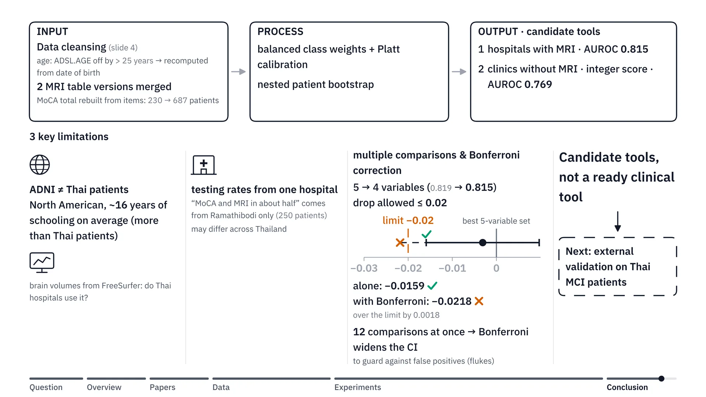
But our work still has 3 limitations. The first is the ADNI dataset we used to train the model. Most of it is data from North Americans, whose average education is about 16 years (an estimate this work did not compute from the cohort; the sources show only that ADNI participants have more schooling than Thai patients, whose CART registry mean is 8.5 years, unverified), which is higher than the average education of patients in Thailand. And then there are the brain volumes we measured with FreeSurfer — we’d need to check whether Thai hospitals use this program.
The second is the testing rates we referenced. For example, we said MoCA and MRI are done in about half of patients; that’s based on a study from Ramathibodi Hospital alone, which means it might not be like this for hospitals across the whole country.
The third and last one: when choosing the 4-variable set in step 4, we set a rule that accuracy must not drop from the full set (here, the best 5-variable set, 0.819) by more than 0.02. Looking at this set on its own, the worst case (the 95% CI lower bound, not a guaranteed worst case) drops only 0.0159 — an easy pass. But at that time we were comparing as many as 12 sets (12 comparisons, or contrast rules) at once, which is like buying many lottery tickets: the more you buy, the more chance you have of winning by fluke. So statistics has a way to compensate, called Bonferroni correction: the more sets you compare, the wider the uncertainty range you have to allow. Once we allowed for that, the worst case (the Bonferroni-adjusted lower bound, also not a guaranteed worst case) dropped 0.0218, just a little past the 0.02 line. That means we still can’t say with full confidence that this 4-variable set is as good as the full set.
Next steps
Because of these 3 limitations, we’re not yet claiming this is a ready-made tool that can be used on Thai patients right away. It’s a prototype toolkit, or candidate tools, that tells us which variables give the best value. The next step is external validation with data from MCI patients in real Thai hospitals.
Thank you, and try it yourself
Thank you to my teacher Dr. Itthi Chatnuntawech (Ajarn Khanun), the TAs P’Gus, Oranatt Chaichanasittikarn, and P’Bank, Nithit Singtokum, the advisers of Group G, and all my friends in Brain Code Camp 2026 of the BrainCode101 programme. If you’d like to look at the results of every model yourself, go to bcc.ohmmingrath.com.
The site gathers the results of every model we tried, with each model’s AUROC.
Frequently asked questions
The questions below come from the backup slides I prepared to answer questions after the presentation, for anyone who wants to go deeper.
Data and preventing leakage
How do we count who "converted to Alzheimer's", and why were 681 people removed?

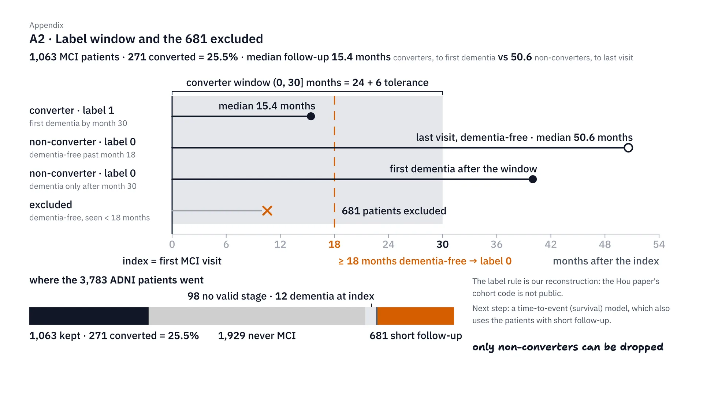
This is our label definition. We count a patient as converting if dementia is first found within 30 months of the date they became MCI — that’s 24 months plus a 6-month margin. Those who don’t convert must have been followed for at least 18 months, because if they were followed for less than that, we don’t know whether they’ll get it later. So we removed 681 people, and we could only remove people who didn’t convert; no one who converted was removed at all. In the end we’re left with 1,063 people, 271 of whom converted, or 25.5%.
In short, the label is an ADNI clinical diagnosis of dementia, not Alzheimer’s pathology confirmed by biomarkers. And because only non-converters with short follow-up were removed, the 25.5% probably runs higher than a general MCI conversion rate, so it should not be read as one.
How did we prevent data leakage, and when were the features measured?

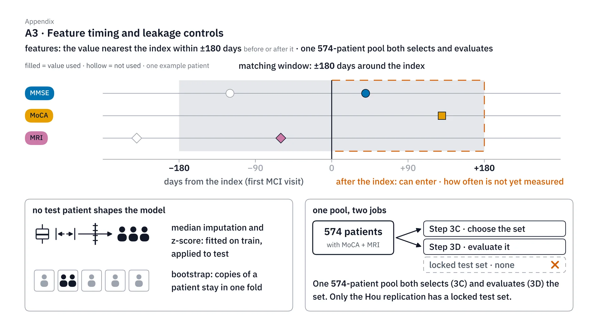
On the timing of features and preventing leakage: for each feature we use the value measured closest to the index date, within ±180 days, which may be a value measured after the index date. I have to admit plainly that this is a bit of a weak point. What actually prevents leakage is that the median and z-score are computed from the train set only, and in the nested bootstrap the same patient must always be in the same fold. One more thing: we used the same 574 patients both to choose the variable set and to measure the results, which may make the results look a little better than they really are.
The teacher asked during the presentation: “Is the z-score computed on everything from the start, or separately for train and test?” The answer is separately. In every one of the 50 splits, we split train and test first, then compute the median used to fill gaps, and the mean and SD of the z-score, from the train set only, and use the same numbers to transform the test set. The test set does not compute its own mean, because in real life new patients come one at a time, and there is no test-set mean to use. This step is inside a scikit-learn pipeline, so it is fitted again in every inner fold too, both when choosing C and when doing calibration. The steps before the split, such as fixing age or adding up the left and right hippocampus, are worked out one person at a time and do not use anyone else’s data.
How different is ADNI data from Thai patients?

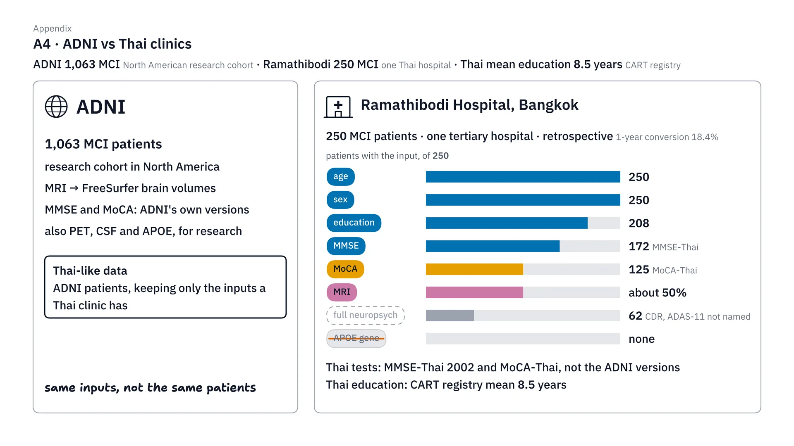
ADNI and Thai patients are not the same. ADNI is 1,063 MCI patients from research in North America. On the Thai side, we reference Ramathibodi’s 250 MCI patients, with education data for 208, MMSE for 172, MoCA for 125, and MRI for about half. What we mean by Thai-like is using ADNI patients but choosing only the inputs Thai clinics have — it doesn’t mean they’re Thai patients. And Thai people studied for only 8.5 years on average (the project report gives 8.5 years as the CART registry mean, not the mean for Thai people in general, and the figure is unverified), much less than in ADNI, so this needs external validation with real Thai data next.
How far can the 0.815 be trusted?
Picking 1 of 63 sets: does the number look better than it really is?

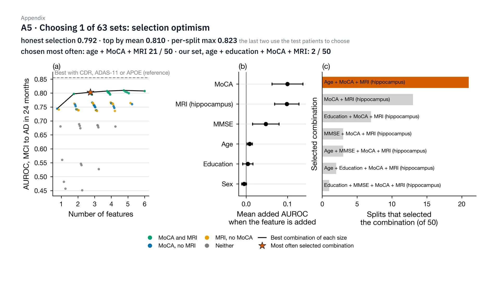
If you ask whether, after picking 1 of 63 sets, the number looks better than it really is, the answer is yes. If we use the test set to choose the best set in each round, we get 0.823. If we choose by the mean, we get 0.810. But if we choose honestly — choosing from the train data only and then measuring on test — it drops to 0.792. The set chosen most often was age + MoCA + MRI, 21 of 50 rounds, while our set with years of education was chosen only 2 of 50 rounds. So 0.815 should be seen as a slightly optimistic value.
How do the "no worse than the best 5-variable set" rule and Bonferroni decide?

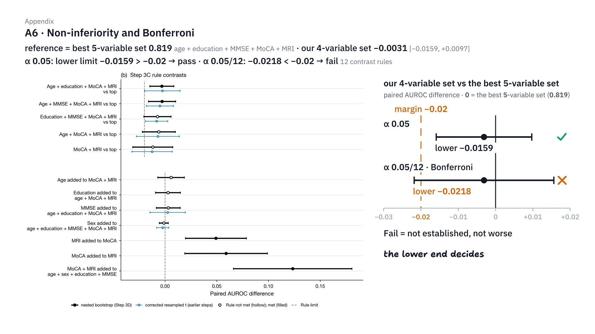
This one is the non-inferiority criterion. We compared our 4-variable set with the best 5-variable set, which got 0.819. The mean difference is only −0.0031, but what decides it is the lower bound of the confidence interval. At α 0.05, the lower bound is at −0.0159, still above the −0.02 line, so it passes. But after correcting with Bonferroni, because we compared 12 sets (12 comparisons, or contrast rules) at once, the lower bound drops to −0.0218, so it fails. That’s why I don’t claim with full confidence that this set is as good as the full set (here, the best 5-variable set), which is limitation 3.
Why did we have to switch to the nested bootstrap?

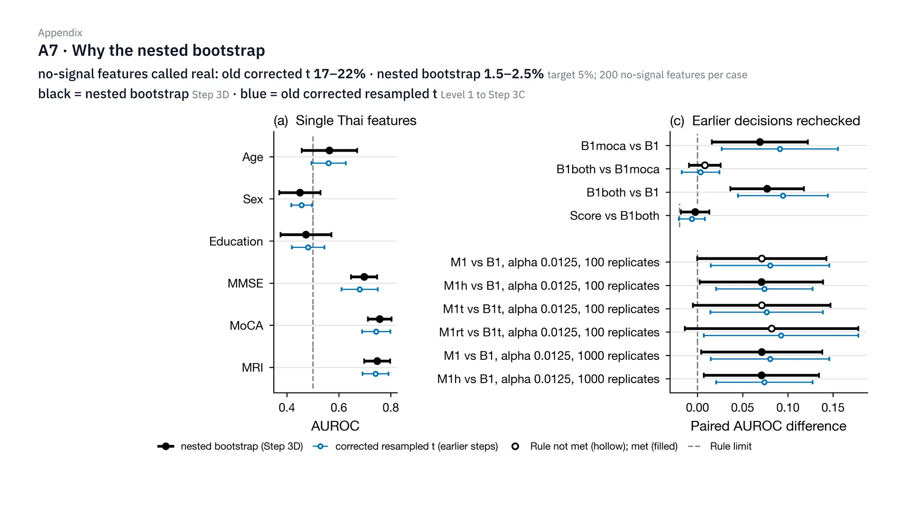
We had to switch to the nested bootstrap because of the result of the no-signal check. We put in fake features with no signal at all, 200 per case. The old formula said they actually worked as much as 17–22% of the time, when it should be only about 5%. But the nested bootstrap leaves just 1.5–2.5%. In the graph, black is the nested bootstrap and light blue is the old formula. This also explains why sex alone got an interval that didn’t cover 0.5 in step 4: because the old formula is narrower than reality.
Did we really try every variable set, and why does the graph say 0.807?

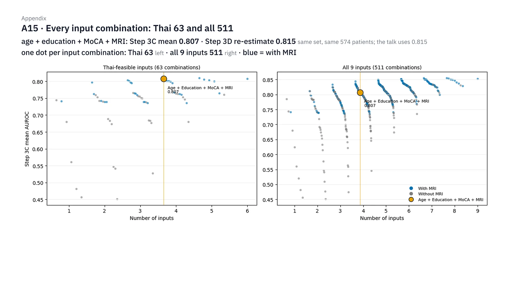
This figure is every variable set we tried. Each dot is one set. The left side is the 63 sets of Thai variables, the right side is the 511 sets from all 9 variables. The light-blue dots are the sets with MRI. And if you ask why the graph says 0.807 but in the main text I said 0.815, it’s because it’s the same set, on the same 574 patients, but 0.807 is the mean from Step 3C, while 0.815 is the value re-evaluated in Step 3D.
In the first round of 404, which patients were the models trained on?

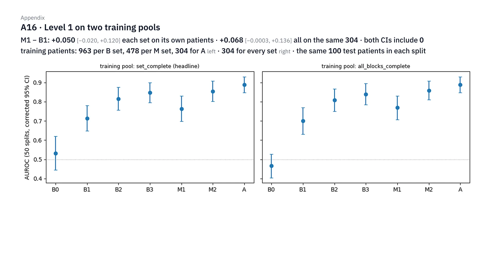
In the first round of 404 people, we tried training two ways. On the left, each set is trained on every patient who has that set’s inputs: set B got 963 people, set M got 478. On the right, every set is trained on the same 304 patients. But both ways test on the same 100 patients in every round. The result is that MRI adds +0.050 and +0.068 over B1, but the confidence interval still covers 0 in both, which is why we expanded to 568 people in round 1b.
MRI, calibration and the points table
Why only hippocampus and ICV?

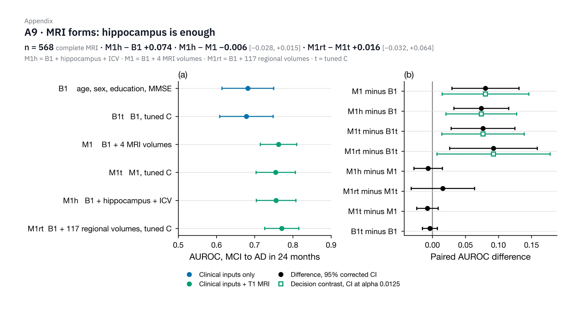
We use only hippocampus paired with ICV because of this result. In 568 people, hippocampus + ICV raises AUROC over B1 by 0.074. Compared with using 4 values, the difference is only −0.006, and the interval covers 0. Using 117 regions with tuned C, which is the t in the graph, adds only 0.016, and the interval still covers 0, so it isn’t clearly better. In short, hippocampus and ICV are enough, which is also simpler for hospitals.
What do the MRI triage graph and sensitivity / specificity look like?

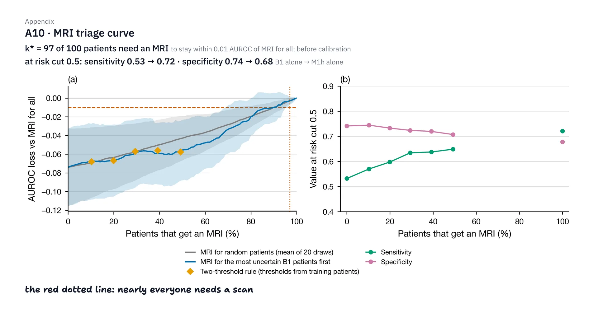
This is the triage graph before fixing calibration. To keep AUROC within 0.01 of scanning everyone with MRI, you’d have to send as many as 97 of 100 people for scans, which is almost everyone. And if you ask about sensitivity and specificity, at risk cut 0.5, adding MRI raises sensitivity from 0.53 to 0.72, but specificity falls from 0.74 to 0.68. We focus on reporting AUROC because these numbers depend on the cut-off we choose.
How much better did calibration and the Brier score get?

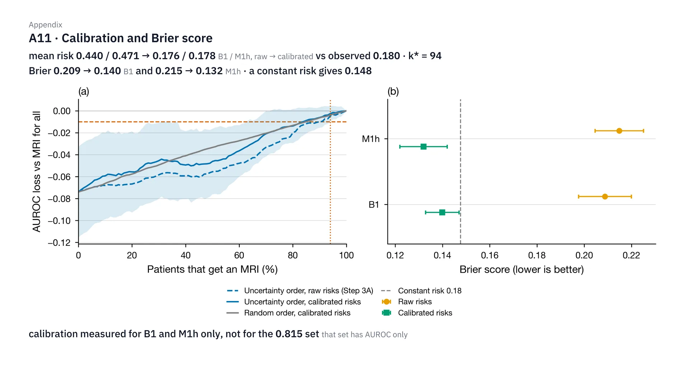
On calibration: with balanced class weights, the average risk the model predicted shot up to 0.44 and 0.47, when the real rate is 0.18. After Platt calibration, it came back to 0.176 and 0.178. The Brier score dropped from 0.209 to 0.140, and from 0.215 to 0.132, which is better than guessing a constant, which gets 0.148. But triage still had to scan 94 of 100 people anyway. One more thing I have to say plainly: for the 0.815 set, we haven’t calibrated the risk yet — there’s only AUROC.
How well do MoCA and the integer score separate risk?

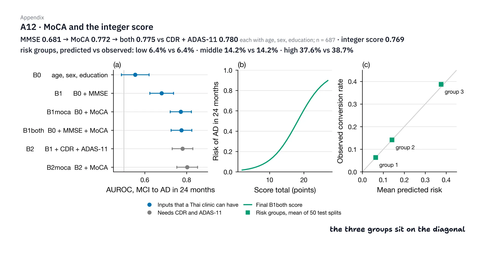
This is the detail of step 3. In 687 people, switching from MMSE to MoCA raises AUROC from 0.681 to 0.772; using both together gets 0.775, close to CDR + ADAS-11, which gets 0.780. The integer score gets 0.769. And when patients are split into 3 risk groups, the risk the table predicts and the real rate match: 6.4 and 6.4%, 14.2 and 14.2%, and 37.6 and 38.7%. So all three points sit right on the diagonal (near it, to be exact: the largest gap is 1.1 percentage points). If you want to see the full table, it’s in the “For doctors” section above.
Is sending MRI first to the people the model is unsure about better than random?

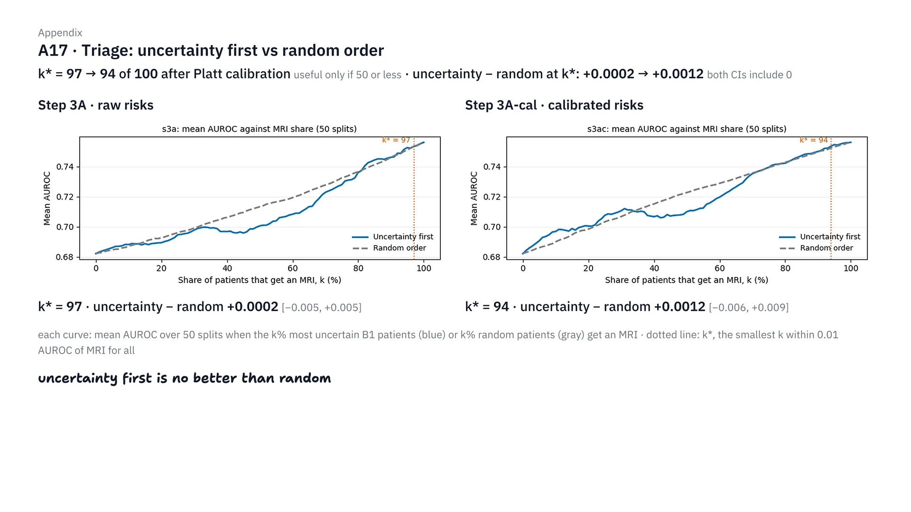
This figure compares two ways of choosing who to send for MRI. The first sends the people B1 is least sure about first; the second picks at random. Before and after calibration, you have to send 97 and then 94 of 100 people for scans, far over the 50 we set as the criterion. And at that point, choosing the unsure people first is no better than random at all: the differences are only +0.0002 and +0.0012, and the interval covers 0 in both. That’s why we shelved the triage plan.
Comparison with the source papers
What does the paper's basic set get on our data?

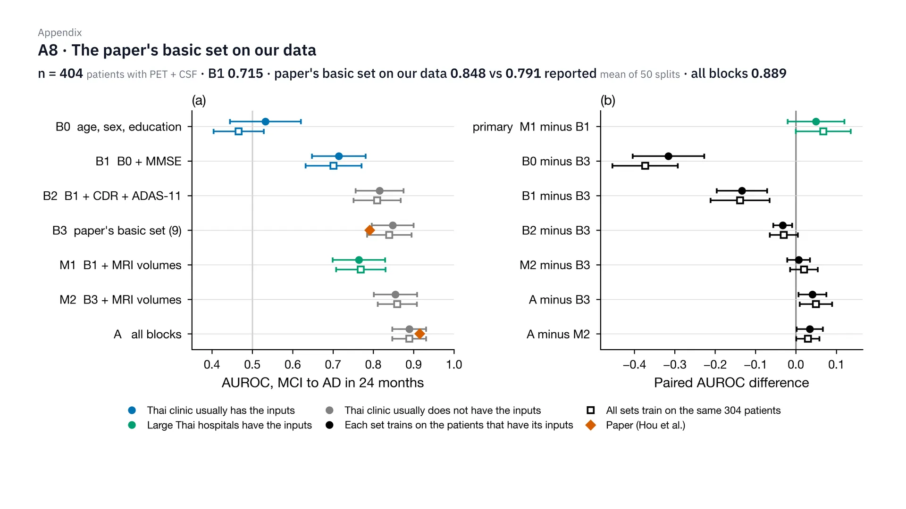
This is the first round, in 404 people with PET and CSF. The paper’s basic set, run on our data for 50 rounds, gets 0.848, which is even higher than the 0.791 the paper reported. The Thai basic set, B1, gets 0.715, and putting in everything, including PET and CSF, gets 0.889. Put simply, the paper’s basic isn’t basic for Thai clinics, because it has CDR, ADAS-11 and the APOE gene, which our clinics don’t have.
Why not deep learning?

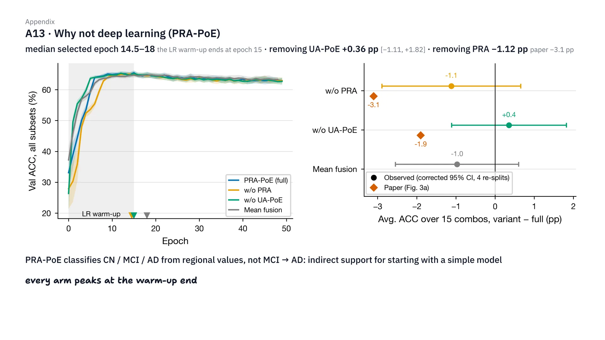
There’s a reason we don’t use deep learning, as follows. When replicating PRA-PoE, the best epoch was around 14.5–18, which is right where the learning rate warm-up ends, at epoch 15. That means after that, the model didn’t get any better at all. And removing UA-PoE didn’t make it worse — a difference of just +0.36 pp — while removing PRA made it worse by −1.12 pp, about a third of the −3.1 pp in the paper. But I should also say that PRA-PoE is a task of separating CN, MCI and AD, not directly our MCI-to-AD task, so this is indirect evidence.
Replicating Hou's paper: how did it turn out?

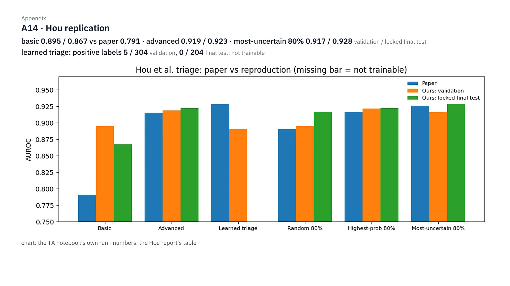
This is the result of replicating Hou’s paper. Our basic model is much stronger than the paper’s: 0.895 and 0.867, compared with the paper’s 0.791. Sending the 80% we’re least sure about to the advanced model gets 0.917 and 0.928, close to using the advanced model alone. But the learned triage, the paper’s highlight, doesn’t work on our data, because the labels used to train it have almost no positive cases: 5 of 304 people, and 0 of 204 people in the final test. As for the numbers swinging when you use a single test set, you can see it in how validation and the final test differ.
Inside PRA-PoE: how far can the modalities the model fills in be trusted?

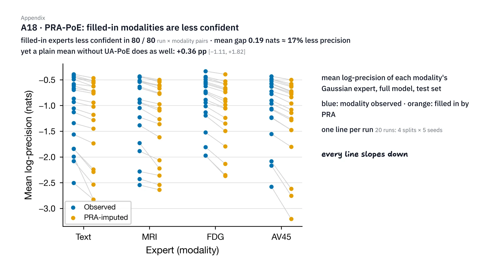
This one looks inside PRA-PoE. The modalities PRA fills in have less confidence than the real ones in every pair, 80 of 80 pairs, but the difference is only 0.19 nats, or about 17% less precision (precision here is the Gaussian expert’s inverse variance, not classification accuracy). So weighting them with UA-PoE doesn’t help, because a plain average gets about the same result, a difference of just +0.36 pp.
Does changing PRA-PoE's settings change the results?

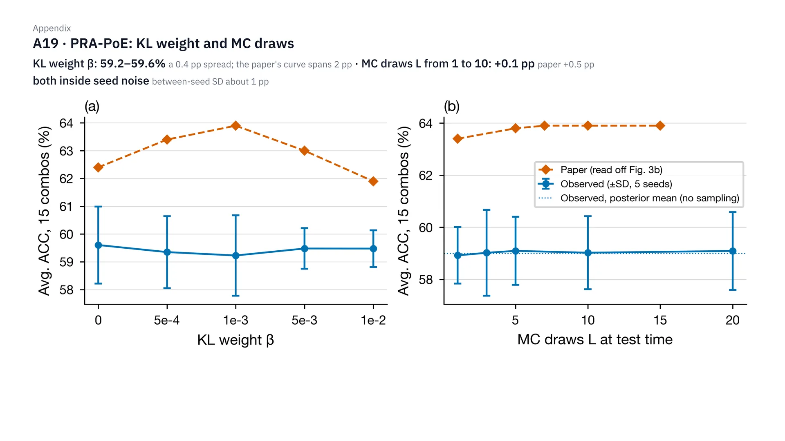
This is the sensitivity of PRA-PoE. Changing the KL weight β, accuracy stays at 59.2 to 59.6%, only 0.4 pp apart, while in the paper they’re as much as 2 pp apart. And raising the number of MC draws from 1 to 10 improves it by only 0.1 pp, compared with 0.5 pp in the paper. Both are within the noise level of changing the seed, which already swings about 1 pp. So we can conclude that these settings don’t affect our data.
Behind the scenes

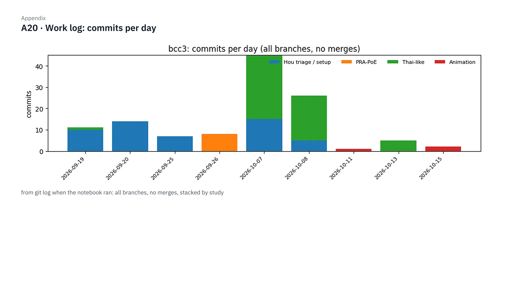
This figure is the work log: the number of commits per day, coloured by study, to show how this project went on step by step, from replicating the papers through each stage of the experiments.
References
- [1] Thaipisuttikul P, Jaikla K, Satthong S, Wisajun P. Rate of conversion from mild cognitive impairment to dementia in a Thai hospital-based population: A retrospective cohort. Alzheimers Dement (N Y). 2022. https://pmc.ncbi.nlm.nih.gov/articles/PMC8970424/
- [2] Hou, Tang, Jin. An Adaptive Machine Learning Triage Framework for Predicting Alzheimer’s Disease Progression. ML4H 2025 Findings. arXiv:2511.06681. https://arxiv.org/abs/2511.06681
- [3] Yang et al. PRA-PoE: Robust Multimodal Alzheimer’s Diagnosis with Arbitrary Missing Modalities. MICCAI 2026. arXiv:2605.13081. https://arxiv.org/abs/2605.13081
- [4] Sullivan LM, Massaro JM, D’Agostino RB Sr. Presentation of multivariate data for clinical use: The Framingham Study risk score functions. Stat Med. 2004;23(10):1631–60. doi:10.1002/sim.1742
- [5] Stern Y. Cognitive reserve in ageing and Alzheimer’s disease. Lancet Neurol. 2012;11(11):1006–12. doi:10.1016/S1474-4422(12)70191-6
- [6] Alzheimer’s Disease Neuroimaging Initiative (ADNI). adni.loni.usc.edu
Data from ADNI
The data used in this project come from ADNIMERGE2 0.1.1 (snapshot 2025-11-12) and from files downloaded from ADNI on 19 September 2026. This post shows only summary values; it contains no individual-level data.
Data used in preparation of this article were obtained from the Alzheimer’s Disease Neuroimaging Initiative (ADNI) database (adni.loni.usc.edu). As such, the investigators within the ADNI contributed to the design and implementation of ADNI and/or provided data but did not participate in analysis or writing of this report. A complete listing of ADNI investigators can be found at: http://adni.loni.usc.edu/wp-content/uploads/how_to_apply/ADNI_Acknowledgement_List.pdf
The ADNI was launched in 2003 as a public-private partnership, led by Principal Investigator Michael W. Weiner, MD. The original goal of ADNI was to test whether serial magnetic resonance imaging (MRI), positron emission tomography (PET), other biological markers, and clinical and neuropsychological assessment can be combined to measure the progression of mild cognitive impairment (MCI) and early Alzheimer’s disease (AD). The current goals include validating biomarkers for clinical trials, improving the generalizability of ADNI data by increasing diversity in the participant cohort, and to provide data concerning the diagnosis and progression of Alzheimer’s disease to the scientific community. For up-to-date information, see adni.loni.usc.edu.
Data collection and sharing for the Alzheimer’s Disease Neuroimaging Initiative (ADNI) is funded by the National Institute on Aging (National Institutes of Health Grant U19AG024904). The grantee organization is the Northern California Institute for Research and Education. In the past, ADNI has also received funding from the National Institute of Biomedical Imaging and Bioengineering, the Canadian Institutes of Health Research, and private sector contributions through the Foundation for the National Institutes of Health (FNIH) including generous contributions from the following: AbbVie, Alzheimer’s Association; Alzheimer’s Drug Discovery Foundation; Araclon Biotech; BioClinica, Inc.; Biogen; Bristol-Myers Squibb Company; CereSpir, Inc.; Cogstate; Eisai Inc.; Elan Pharmaceuticals, Inc.; Eli Lilly and Company; EuroImmun; F. Hoffmann-La Roche Ltd and its affiliated company Genentech, Inc.; Fujirebio; GE Healthcare; IXICO Ltd.; Janssen Alzheimer Immunotherapy Research & Development, LLC.; Johnson & Johnson Pharmaceutical Research & Development LLC.; Lumosity; Lundbeck; Merck & Co., Inc.; Meso Scale Diagnostics, LLC.; NeuroRx Research; Neurotrack Technologies; Novartis Pharmaceuticals Corporation; Pfizer Inc.; Piramal Imaging; Servier; Takeda Pharmaceutical Company; and Transition Therapeutics.